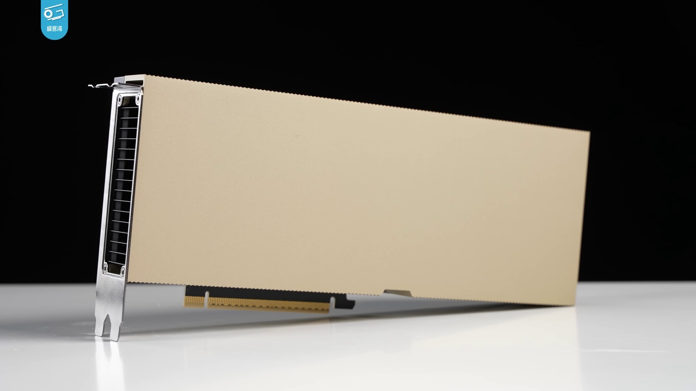

Executive Summary
중국 Moonshot AI가 2.8조 파라미터 규모의 Kimi K3 가중치를 7월 27일 공개한다. 역사상 가장 큰 오픈웨이트다. 이 소식이 주목받는 첫 번째 이유는 대개 "공짜"라는 값표지만, 데이터를 다루는 조직에 더 중요한 건 값이 아니라 데이터가 어디를 거치느냐다. 이 글은 오픈웨이트의 진짜 가치를 비용이 아니라 데이터의 주소지에서 찾는다.
API로 쓰면 프롬프트와 사내 문서는 중국 관할권 서버를 거친다. 셀프호스팅은 그 트래픽을 국경 안에 묶어 준다. 다만 4비트로 양자화해도 가중치는 1.4테라바이트에 이르고, 이 무게를 통째로 가속기 메모리에 올리려면 80GB급 GPU가 최소 열여덟 장 필요하다. 데이터 주권을 얻는 조건이 곧 인프라를 감당할 능력이라는 뜻이다.
그래서 "누구나 내려받지만 아무나 못 돌린다"는 개방의 역설이 생긴다. 셀프호스팅이 막아 주는 것과 끝내 막지 못하는 것, 그리고 1.4테라바이트라는 무게가 데이터 리더의 선택지를 어디까지 좁히는지가 이 사건의 진짜 쟁점이다.
이 모델이 얼마나 크고, 그 크기가 왜 곧장 인프라 문턱으로 바뀌는지는 다음 네 개의 수치에서 이미 드러난다.
2.8조
총 파라미터
896개 전문가 중 토큰당 16개(~500억)만 활성
1.4TB
4비트 가중치 크기
16비트 기준으로는 약 5.6TB
18장
80GB급 가속기 최소치
가중치 로딩만으로, 컨텍스트·동시 요청 제외
8장
192GB 단일 노드 하한
Blackwell·MI400 8장, 여유 거의 없음
사상 최대 오픈웨이트, 진짜 이득은 값표가 아니다
Kimi K3는 중국 베이징의 Moonshot AI가 만든 2.8조 파라미터 규모의 MoE(Mixture-of-Experts) 모델이다. 전체 파라미터는 2.8조에 이르지만 토큰마다 896개 전문가 중 16개만 켜지므로, 한 번의 추론에 실제로 도는 파라미터는 500억 남짓이다. API와 서비스는 7월 16일 먼저 열렸고, 가중치 자체는 7월 27일 오전 0시(UTC) 허깅페이스에 공개된다. 공개 규모로만 보면 역사상 최대의 오픈웨이트다.
성능도 화젯거리다. 같은 컴퓨트로 이전 세대(K2)보다 약 2.5배 높은 학습 효율을 냈고, 여러 공개 지표에서 상위권에 올랐다. 한 업계 분석가는 이 공개로 오픈 모델과 폐쇄 모델의 격차가 종전 6~9개월에서 3~5개월로 좁혀졌다고 평가했다. 오픈웨이트가 프런티어를 바짝 뒤쫓는 시대가 됐다는 신호다.
그러나 데이터를 다루는 조직에 이 사건의 핵심은 벤치마크 순위가 아니다. 오픈웨이트가 진짜로 바꾸는 건 "모델을 얼마에 쓰느냐"가 아니라 "내 데이터가 어디를 거치느냐"다. API를 호출할 때마다 프롬프트와 문서는 회사 밖 서버로 나간다. 가중치를 손에 쥐면 그 흐름을 내 인프라 안에서 끝낼 수 있다. 오픈웨이트의 값어치를 비용이 아니라 데이터의 주소지에서 읽어야 하는 이유다.
프롬프트가 베이징에 남지 않으려면
Moonshot이 호스팅하는 API를 쓰면 프롬프트는 중국 소재 서버에서 처리된다. 여기에는 회사 위치나 프라이버시 정책과 무관하게 중국 법이 걸린다. 국가정보법 제7조는 중국 기업에 국가 정보업무 협조 의무를 지우고, 2026년 1월 개정으로 AI 시스템을 명시적으로 포함한 사이버보안법과 데이터안전법도 함께 적용된다. 서버를 어디에 두든, 싱가포르 법인을 세우든, 회사 차원의 의무는 남는다.
추상적인 우려가 아니다. 2026년 4월에는 Kimi가 한 사용자의 이력서를 이름·전화번호·경력까지 통째로 다른 사용자에게 노출한 데이터 격리 실패 사고가 있었다. 소비자용 개인정보 정책은 서버 관할지를 명시하지 않고, 프롬프트를 학습에 쓴다고 밝히면서도 2026년 중반까지 옵트아웃 기능을 문서화하지 않았다. 한 보안 조사에 따르면 기업 환경에서 Kimi는 경쟁 모델보다 3.5배 많은 이른바 섀도 AI 트래픽을 만들었고, 가장 많이 새 나간 데이터는 코드와 재무 전망, M&A 정보였다.
셀프호스팅이 여기서 하는 일은 분명하다. 추론 트래픽이 Moonshot 서버에 닿지 않으므로, 프롬프트가 중국 관할권 서버에 물리적으로 도달하지 않는다. 이 "구조적 보호"는 실재한다. 다만 만능은 아니다. Moonshot이라는 회사에 걸린 법적 의무 자체는 셀프호스팅과 무관하게 존재하고, 가중치 어딘가에 심어질 수 있는 편향이나 트리거의 가능성까지 자체 호스팅이 완전히 배제해 주지는 않는다. 셀프호스팅은 데이터의 이동 경로를 끊을 뿐, 모델 자체를 무조건 신뢰해도 된다는 보증서는 아니다.
한 달 사이 최첨단 AI 접근권 자체가 지정학적 변수가 되기도 했다. 6월에는 미국이 특정 최상위 모델 접근을 한때 전면 차단했다가 조건부로 되돌렸다. 프롬프트가 어느 국경 안에 머무느냐가 정책 한 줄에 흔들릴 수 있다는 사실이, 셀프호스팅을 단순한 비용 선택이 아니라 리스크 관리의 문제로 만든다.
1.4테라바이트, 하드웨어가 답을 대신 정한다
그런데 셀프호스팅을 택하는 순간 문제는 법에서 물리로 넘어간다. Kimi K3의 가중치는 MXFP4 4비트로 양자화해도 약 1.4테라바이트에 이른다. 원래의 16비트 정밀도로는 5.6테라바이트다. 이 무게는 디스크에 두는 게 아니라 추론 내내 가속기 메모리에 통째로 올라가 있어야 한다. 바로 이 지점이 "누가 실제로 돌릴 수 있는가"를 가른다.
숫자로 옮기면 이렇다. 4비트 가중치만 올리는 데 80기가바이트급 가속기가 약 열여덟 장 필요하다. 100만 토큰 컨텍스트와 동시 요청까지 감안하면 요구량은 더 커진다. 현실적인 최소 단위는 각 192기가바이트를 가진 Blackwell이나 MI400 가속기 여덟 장을 한 노드에 묶는 구성인데, 그마저 여유가 거의 없다. 다음 표는 정밀도별 무게와 그에 대응하는 하드웨어를 정리한 것이다.
| 구성 | 가중치 크기 | 필요 하드웨어(가중치 기준) |
|---|---|---|
| MXFP4 4비트 | 약 1.4TB | 80GB급 가속기 약 18장, 또는 192GB급 8장 단일 노드 |
| 16비트 | 약 5.6TB | 동일 가속기 기준 약 4배의 장수 — 단일 노드로는 사실상 불가 |
여기서 병목이 바뀌었다는 점이 중요하다. 활성 파라미터가 500억뿐이라 연산량 자체는 그리 무겁지 않다. 발목을 잡는 건 연산이 아니라 2.8조 개 전체 가중치를 담아 둘 메모리의 용량과 대역폭이다. "오픈웨이트니까 노트북이나 워크스테이션에서 돌린다"는 통념이 이 규모에서는 무너진다. 무게가 곧 문턱이고, 그 문턱의 높이를 우리가 아니라 하드웨어가 정한다.

누구나 내려받지만 아무나 못 돌린다
가중치가 공개됐다는 말과 내가 그것을 돌릴 수 있다는 말은 다르다. 1.4테라바이트를 상주시킬 클러스터를 갖춘 곳은 클라우드 사업자, 대형 추론 제공업체, 충분히 자본이 있는 대기업과 연구기관 정도다. 양자화한 소형 모델을 노트북에서 굴리던 "일반 오픈소스 개발자"의 그림은 이 규모에서 재현되지 않는다. 가중치는 탈중앙화됐지만, 그것을 실제로 운용할 능력은 인프라 사업자에게 다시 집중된다.

이 무게가 얼마나 버거운지는 모델을 만든 Moonshot 자신이 먼저 보여 줬다. 공개를 앞두고 구독 서비스를 한때 멈춰야 했는데, 자체 GPU 수급조차 빠듯하다는 사정이 그 배경으로 지목됐다. 만든 곳마저 컴퓨트에 쫓기는 판이라면, 그 아래에 있는 대다수 조직에게 "내려받아 직접 돌린다"는 선택지는 더 좁아진다.
그래서 한 분석가는 Kimi K3를 "도입"하는 대다수 구매자가 결국 이 모델을 임대하게 될 것이라고 봤다. Moonshot의 API를 쓰든, 가중치를 대신 얹어 주는 클라우드를 빌리든, 벗어나려던 것과 똑같은 형태의 벤더 종속을 다시 물려받는다는 것이다. 오픈웨이트가 자유를 준 것처럼 보이지만, 실제 운용 단계에서는 임대 구조로 되돌아온다. 이것이 개방의 역설이다.
절충안이 없지는 않다. 유럽처럼 제3국의 추론 제공업체가 이 모델을 자국 데이터센터에서 서빙하면, 토큰 단위로 과금하면서 데이터를 그 관할권 안에 묶어 둘 수 있다. 다만 이것은 셀프호스팅이 아니라 "관할권을 바꾼 임대"에 가깝다. 게다가 KDA라는 새 어텐션 구조에 맞춘 vLLM 등 서빙 프레임워크가 아직 손질 중이라, 프로덕션급 안정 서빙은 2026년 4분기에나 현실화될 전망이다. 내려받는 문은 열렸어도, 돌리는 문은 아직 좁다.
데이터 주권을 약속으로 남기지 않으려면
정리하면, "오픈웨이트를 받았다"와 "데이터 주권을 확보했다" 사이에는 1.4테라바이트만큼의 간극이 있다. 그 간극을 메우는 건 라이선스가 아니라 인프라 준비도다. 오픈웨이트를 검토하는 데이터 리더라면, 채택을 결정하기 전에 최소한 다음을 확인해 두는 편이 좋다.
- 내려받은 가중치를 우리 인프라에서 실제로 서빙할 메모리 용량과 대역폭이 있는가, 아니면 결국 누군가에게 빌려야 하는가.
- 빌려야 한다면 그 제공업체는 어느 관할권에 있고, 프롬프트와 문서가 어느 국경 안에 머무는가.
- 모델을 자체 호스팅하더라도 입출력 데이터의 계보(어디서 와서 어떻게 가공됐는지)를 스스로 설명할 수 있는가.
- 서빙 프레임워크의 성숙도와 운영 인력까지 포함해, 이 배포를 몇 개월이 아니라 몇 년 유지할 수 있는가.
오픈웨이트는 데이터 주권을 향한 문을 열어 준다. 그러나 문을 여는 것과 그 안에서 살림을 꾸리는 것은 별개다. 데이터가 어디에 있고 누구의 손을 거치는지를 스스로 통제하는 역량 — 그것이 인프라 준비도이자, 오픈웨이트 시대의 실질적인 데이터 거버넌스다.
참고문헌
업계 분석
- 1.Lambert, N. (2026). "Kimi K3: The Open-Weights Escalation." Interconnects.ai.
- 2.Techi. (2026). "Kimi K3 Open-Weights Inference Economics." Techi.com.
뉴스 보도
- 3.TechTimes. (2026). "Kimi K3 Open Weights Arrive Sunday: Self-Hosting Cuts China Data Risk the API Never Can." (2026-07-25).
- 4.TechTimes. (2026). "Kimi K3 Open Weights Drop July 27: Near-Frontier Coding, Undisclosed Hallucination Risk." (2026-07-24).
- 5.TechTimes. (2026). "Kimi K3 Subscription Pause Exposes GPU Crunch Behind Open-Weight Strategy." (2026-07-21).